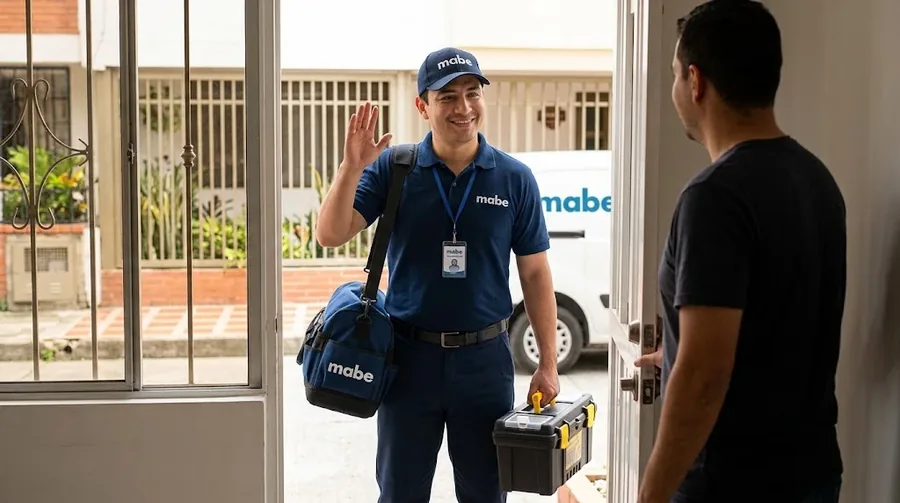
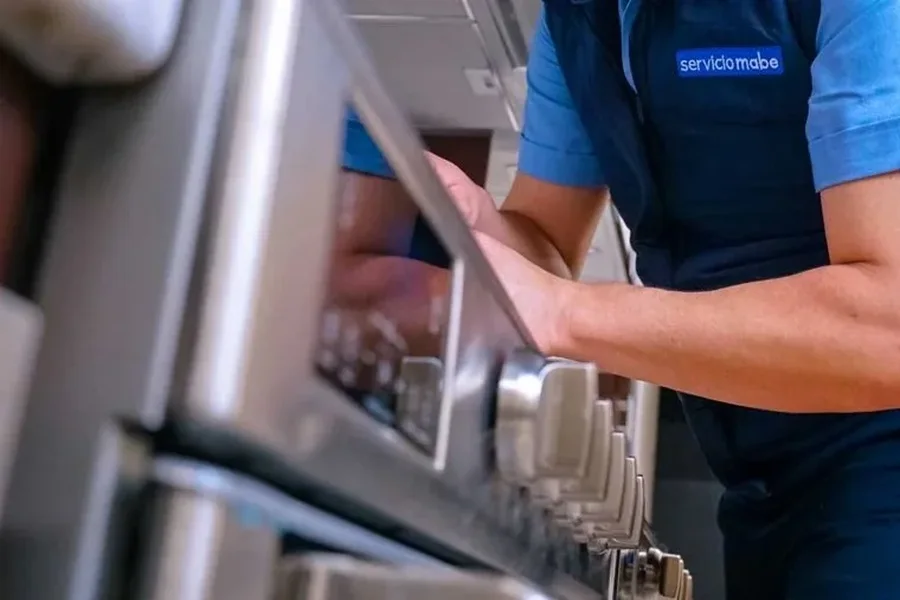
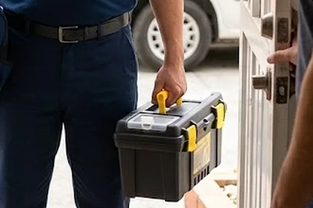
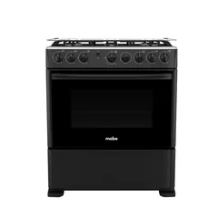
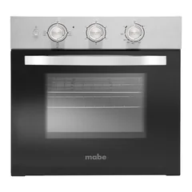
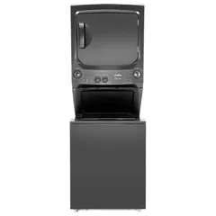
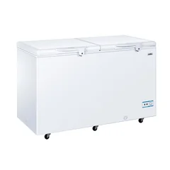
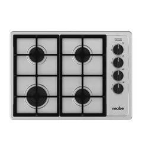
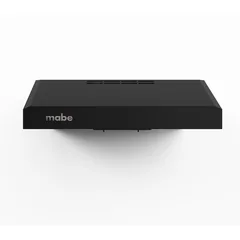
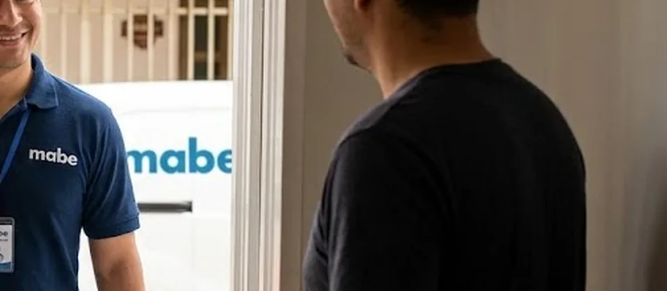

Reparación de electrodomésticos a domicilio
Servicio técnico Mabe Quito
Reparación de electrodomésticos Mabe en Quito: refrigeradoras, lavadoras, secadoras, cocinas, hornos y más, en tu casa. Diagnóstico claro y costo antes de reparar.
- A domicilio en Quito
- Norte, centro, sur y valles
- Te explicamos la falla antes de reparar

Nuestros servicios
Todo lo que hacemos por tus electrodomésticos Mabe en Quito.
 Reparación a domicilioReparamos a domicilio los electrodomésticos Mabe más comunes del hogar en Quito: refrigeradoras…Ver servicio →
Reparación a domicilioReparamos a domicilio los electrodomésticos Mabe más comunes del hogar en Quito: refrigeradoras…Ver servicio → Mantenimiento preventivoUn mantenimiento a tiempo cuesta menos que una reparación grande. Revisamos limpieza, conexiones…Ver servicio →
Mantenimiento preventivoUn mantenimiento a tiempo cuesta menos que una reparación grande. Revisamos limpieza, conexiones…Ver servicio → InstalaciónUna instalación correcta evita fugas, vibración, mal funcionamiento y riesgos con el gas…Ver servicio →
InstalaciónUna instalación correcta evita fugas, vibración, mal funcionamiento y riesgos con el gas…Ver servicio → DiagnósticoNo siempre se sabe qué falla de un equipo. El diagnóstico identifica la causa…Ver servicio →
DiagnósticoNo siempre se sabe qué falla de un equipo. El diagnóstico identifica la causa…Ver servicio →
Tarjetas electrónicasMuchas fallas actuales vienen de la tarjeta de control: el equipo no enciende, se reinicia…Ver servicio →
RepuestosSi tu equipo necesita una pieza, primero hay que confirmar cuál es…Ver servicio →Electrodomésticos que reparamos
Elige tu equipo: cada uno tiene sus fallas, servicios y zonas.

Reparación de refrigeradoras Mabe en Quito
Reparamos refrigeradoras (neveras) Mabe a domicilio en Quito: de congelador superior, Side by Side…
Fallas más consultadas- Refrigeradora Mabe: no enfría
- Refrigeradora Mabe: el congelador se llena de escarcha
- Refrigeradora Mabe: gotea agua dentro de la nevera

Reparación de lavadoras Mabe en Quito
Reparamos lavadoras Mabe de carga superior y de carga frontal a domicilio en Quito: no centrifugan…
Fallas más consultadas- Lavadora Mabe: no centrifuga
- Lavadora Mabe: no desagua (queda agua en la tina)
- Lavadora Mabe: no llena de agua o llena muy lento

Reparación de secadoras Mabe en Quito
Reparamos secadoras Mabe eléctricas y a gas a domicilio en Quito: no secan, no calientan, hacen ruido…
Fallas más consultadas- Secadora Mabe: no seca o la ropa sale húmeda
- Secadora Mabe: no calienta
- Secadora Mabe: tarda demasiado en secar

Reparación de cocinas Mabe en Quito
Reparamos cocinas Mabe a gas en Quito: hornillas que no encienden, llama amarilla o débil…
Fallas más consultadasTodo sobre cocina Mabe →
Reparación de hornos Mabe en Quito
Reparamos hornos Mabe empotrables, eléctricos y a gas en Quito: no calientan…
Fallas más consultadas- Horno Mabe: no calienta
- Horno Mabe: calienta de más o quema
- Horno Mabe: calienta de menos o tarda mucho

Reparación de centros de lavado Mabe en Quito
Reparamos centros de lavado (torres de lavado y secado) Mabe en Quito: no centrifugan, no secan…
Fallas más consultadas- Centro de lavado Mabe: no centrifuga
- Centro de lavado Mabe: la secadora de la torre no seca
- Centro de lavado Mabe: no desagua

Reparación de congeladores Mabe en Quito
Reparamos congeladores Mabe horizontales y verticales en Quito: no congelan, forman demasiado hielo…
Fallas más consultadas- Congelador Mabe: no congela o congela poco
- Congelador Mabe: forma demasiado hielo
- Congelador Mabe: hace ruido fuerte

Reparación de parrillas y encimeras Mabe en Quito
Reparamos parrillas y encimeras Mabe a gas, eléctricas y de inducción en Quito…
Fallas más consultadas- Parrilla Mabe: un quemador no enciende
- Parrilla Mabe: llama irregular, amarilla o débil
- Parrilla Mabe: huele a gas

Reparación de campanas extractoras Mabe en Quito
Reparamos campanas extractoras Mabe en Quito: no succionan bien, hacen ruido, vibran…
Fallas más consultadas- Campana extractora Mabe: no succiona
- Campana extractora Mabe: hace ruido o vibra
- Campana extractora Mabe: no enciende
Cobertura: barrios de Quito
Atendemos el norte, el centro, el sur y los valles. Elige tu barrio.

Cómo trabajamos
Vamos hasta donde está tu equipo, lo revisamos y te explicamos antes de reparar.
- 1
Escríbenos
Por WhatsApp o llamada al 099 350 8191. Cuéntanos qué equipo es, la marca, el modelo y la falla.
 2
2Coordinamos la visita
Acordamos día y hora en tu casa, apartamento u oficina de Quito.
- 3
Diagnóstico en tu casa
Probamos el equipo, identificamos la causa y te explicamos qué tiene.
- 4
Reparación y prueba
Reparamos y probamos que el equipo quede funcionando.
Guías
Gas, voltaje, limpieza y fallas explicadas para Quito.
Preguntas frecuentes
¿Hacen servicio técnico Mabe a domicilio en Quito?
Sí. Vamos a tu casa, apartamento u oficina en Quito: norte, centro, sur y valles. Escríbenos por WhatsApp con el equipo, el modelo y la falla.
¿Qué electrodomésticos Mabe reparan?
Refrigeradoras, congeladores, lavadoras, secadoras, centros de lavado, cocinas, hornos, parrillas y campanas extractoras.
¿Qué hago si mi equipo está en garantía?
Revisa primero las condiciones de la garantía de fábrica. Si ya venció o necesitas un diagnóstico, escríbenos por WhatsApp.
¿Cuánto cuesta la visita?
Escríbenos al WhatsApp con el equipo, el modelo y la falla; te confirmamos el costo de la visita antes de ir.
¿Dan el costo antes de reparar?
Sí. Primero diagnosticamos, te explicamos la falla y te informamos el costo antes de continuar.
¿Cómo pido el servicio?
Por WhatsApp o llamada al 099 350 8191 (+593 99 350 8191). Envía marca, modelo, falla, tu barrio y, si puedes, una foto de la etiqueta y un video corto.
¿Tu electrodoméstico está fallando?
Escríbenos por WhatsApp con la marca, el modelo y la falla. Te orientamos y coordinamos la visita.
Escribir por WhatsApp Llamar 099 350 8191